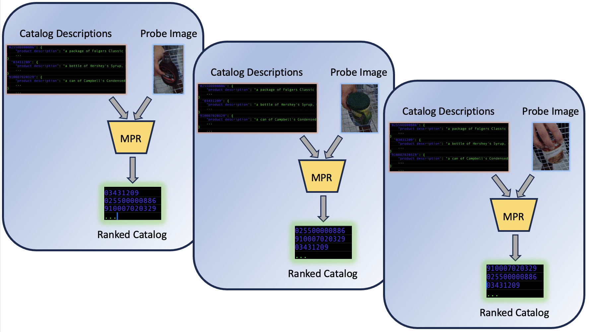

The 4th GroceryVision Challenge
Saturday, October 18th, 2025, Honolulu, HI
Dataset Challenges
As part of the RetailVision workshop, two challenge tracks will be made available from the Grocery Vision 2023 datset consisting of real-world, physical retail data collected in typical grocery store environments. These challenge datasets contain anonymized individual shopping actions collected with a GoPro camera mounted to a standard US shopping cart. These challenges are:
Track 1: Video Temporal Action Localization (TAL) and Spatial Temporal Action Localization (STAL):
The TAL and STAL challenges aim at localizing products associated with actions of interest in video. The environment the video is captured in is a physical retail grocery store and the capture system consists of a camera mounted on a regular shopping cart looking inwards at the basket volume. The TAL challenge will consist of training a model that localizes temporally, (along the time axis) the actions of interest in each video in the dataset. STAL on the other hand will involve localizing the product associated with the action spatially and temporally in the video. The action of interest in this challenge is one of three common place actions performed by people shopping with grocery carts; Take: Putting a product into the basket, Return: Removing a product out of the basket and Rummage: Moving products around in the basket. We will evaluate the models performance based on frame-mAP (temporal localization) and tube-mAP (spatio-temporal localization).
In this task, participants will be provided with 73,683 images and annotation pairs for download as training set.
Track 2: Multi-modal Product Retrieval (MPR):
The goal of MPR challenge is to retrieve the product identity from an open pool of candidate products. Participants will be given a training dataset consisting of (i) images for different products, and (ii) textual description of the products, and are expected to design methods to accurately retrieve the product identity by measuring similarity between images and textual descriptions. For evaluation, a held out set of probe images and a pool of textual description of catalog products will be passed to the model. The model is expected to output a ranked list of catalog products based on the similarity between images and descriptions. We use Cumulative Matching Characteristics (CMC) to evaluate performance of each solution.
Download the dataset:
This dataset is released under CC BY-NC 4.0 license. Please review the license and an email to retailvision4challenge@amazon.com to receive a link to download the dataset. Please include your (1) name, (2) email (affliation email, not @gmail etc.), (3) purpose of using the dataset. We will respond as soon as possible.
Submit Results:
Once completed, please submit all the files to run your proposed model as a zip file, or a download link to retailvision4challenge@amazon.com. Please provide a Python inference code and instructions to setup the environment. Your submission will be evaluated against a holdout test set which is not released publicly.
For the TAL Challenge:
The output of your solution should consist of a set of text
files — one per input video. In each text file please list each
predicted action in the video on a separate line in the
following format:
<start_frame, end_frame, action_class, confidence>
Please list the confidence associated with the action class
which will enable us to compute frame-mAP.
For the STAL Challenge:
The output of your solution should consist of a set of text
files — one per input video. In each text file please list each
predicted action tubelet in the video as a separate element of a
list in the following format: [tube_1, tube_2, ..., tube_n]
Each tubelet should be formatted like the following:
{"track": [[f,x0,y0,x1,y1,c], [f,x0,y0,x1,y1,c], ..., [f,x0,y0,x1,y1,c]], "conf": <float [0-1]>, "cat": <"take"|"return"|"rummage">}For the MBR Challenge:
Please include python scripts to infer the category based on
input images, for example:
python infer.py --images ${path to probe images(jpg)} --catalog ${catalog_texts.json} --output ${file containing an ordering of candidate products}.Input: the model should take in a folder containing .jpg images of a product, plus a .json file containing the description of catalog products.
Output: For each execution of inference, a .txt output file is expected, which contains the ordering of candidate products for the given probe images. In the resulting .txt file, the ranked list of products is stored, one barcode per row.
Important Dates
| Challenge Submissions | Date |
|---|---|
| 💪 Challenge Registration Deadline and Training Data Release | June 6th, 2025 |
| 💪 Challenge Results Submission Deadline | August 1st, 2025 |
| 💪 Challenge Winner Notification | August 22nd, 2025 |